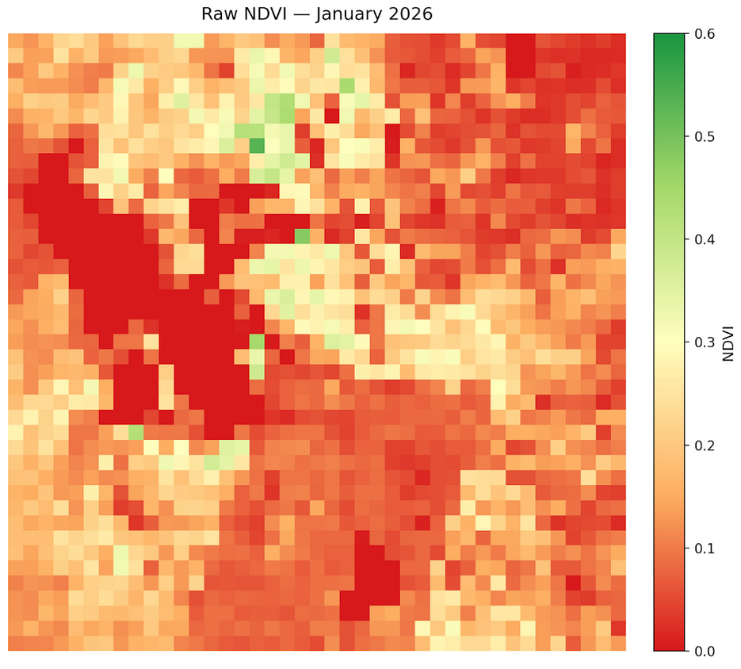
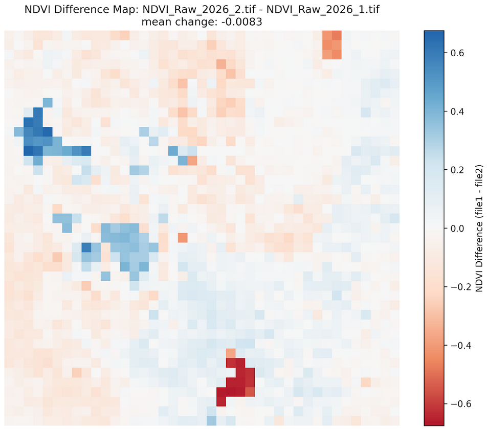

Reader's Guide
How to Read Our Maps
A plain-language guide to understanding NDVI maps, anomaly maps, and difference maps in Wasatch Watch reports.
A plain-language guide to understanding NDVI maps, anomaly maps, and difference maps in Wasatch Watch reports.
Every Wasatch Watch map is built around an index called NDVI — the Normalized Difference Vegetation Index. NDVI measures the relative greenness of a piece of land using satellite imagery. It works by comparing how much red light versus near-infrared light is reflected from the surface. Healthy vegetation absorbs red light and strongly reflects near-infrared, producing high NDVI values. Bare soil, rock, and water do neither, producing low or negative values.
Each pixel in a Wasatch Watch map represents approximately 5.5 square kilometers of land. The color of that pixel tells you the NDVI value for that area during that month.
Dense, healthy plant cover. Forests, irrigated farmland, and lush mountain vegetation in summer.
Sparse or stressed vegetation. Typical of semi-arid shrubland, dormant grass, or drought-affected areas.
Bare soil or extremely stressed vegetation. Common during winter times.
Roads, water bodies, or snow-covered ground. Values of less than 0 are typical of the Great Salt Lake.
A high NDVI value means an area looks green from space but that doesn't always mean the vegetation is healthy. Snow cover suppresses NDVI by masking plants, so snowmelt can raise NDVI values even with no new growth. This is especially important to keep in mind when reading winter reports. Each report addresses these interpretation caveats explicitly.
Each monthly report contains three types of maps. They answer three different questions about what vegetation is doing and why.
Shows the actual NDVI value for each pixel during the current month. Color runs from red (low vegetation) through yellow to green (high vegetation). This is the baseline or what vegetation looks like right now.
Red = low · Yellow = moderate · Green = highShows how this month compares to the historical average for the same month across the 2013–2026 archive. Blue means above average, red means below average. This answers: is this month unusual?
Blue = above historical average · Red = below historical averageShows the raw NDVI change from the previous month to the current month. Blue means vegetation increased, red means it decreased. This answers: what changed since last month?
Blue = NDVI increase · Red = NDVI decreaseShows the raw NDVI change from the same month last year to the current month. Useful for identifying longer-term trends and drought signals that persist across seasons. This answers: how does this year compare to last?
Blue = NDVI increase vs last year · Red = NDVI decrease vs last yearThe map below shows a typical winter NDVI composite for the Wasatch Front. Mountain areas on the east side show moderate values as some vegetation is visible beneath sparse snowpack, while valley floors and the Great Salt Lake show near-zero values consistent with low vegetation and open water.

Difference maps use a diverging blue-red color scale centered at zero. Pixels that turned greener since the comparison period are blue. Pixels that lost vegetation are red. A predominantly blue map means vegetation increased broadly. A predominantly red map means broad vegetation loss or increased snow cover.

In some difference maps the Great Salt Lake appears to gain vegetation, which obviously did not happen. This is a remote sensing artifact. The way we calculate difference maps is by subtracting the current map from the previous one across all pixels. If values are negative in the previous map on the lake, which they often are as discussed above, subtracting a negative number will yield a positive one. Thus, it appears that the GSL gained vegetation, when in reality both of the raw maps registered it as negative.
Counterintuitively, reduced snowpack in winter can produce higher NDVI readings in mountain areas. Snow cover suppresses NDVI by masking the ground surface, bare dormant soil and sparse vegetation read higher than snow-covered ground. So an anomalously warm, dry winter with little snowpack will show higher mountain NDVI than a cold, snowy winter even though the ecological conditions are worse. This is one of the most important interpretation pitfalls in winter NDVI analysis and is flagged in every winter report.
Negative NDVI values typically indicate open water, clouds, or dense snow cover which are surfaces that reflect more red light than near-infrared. The Great Salt Lake and Utah Lake consistently produce near-zero or slightly negative values. In practice, any pixel with NDVI below about 0.1 should be interpreted as unvegetated rather than as stressed vegetation.
Each monthly report is published within a few weeks of the end of the reported month, once sufficient Landsat 8 scenes are available to produce a clean median composite. The report month and publication date are noted at the top of each report.
With this guide you have everything you need to interpret the maps and findings in any Wasatch Watch monthly report. For a deeper look at how the data is produced, see the full methodology page.
Read the latest monthly report, browse the full archive, or explore the methodology behind the data.